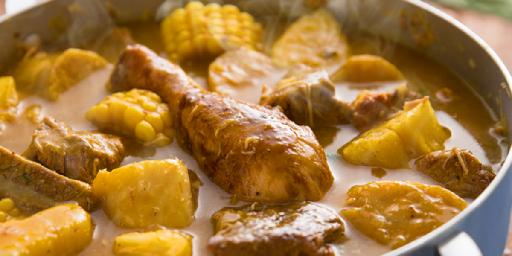

Sancocho Dominicano
El sancocho (caldo de carne y vegetales dominicano) es sin duda el plato más apreciado de los dominicanos. El sancocho se suele hacer en ocasiones especiales, pero puedes disfrutarlo cualquier día. Aquí te muestro todas las formas de preparar el sancocho, y cómo puedes hacerlo tú también.
Ingredientes
- 1 libra carne de res , para caldo [0.45 kg] cortada en trozos pequeños
- 1 libra carne de chivo, [0.45 kg] cortada en trozos pequeños
- 1 libra carne de cerdo , para caldo [0.45 kg] cortada en trozos pequeños
- Jugo de 2 limones
- 1 cucharadita cilantro , o perejil picado
- ½ cucharadita orégano en polvo
- 1 cucharada ajo , majado
- 1 ½ cucharadita sal, (o más, al gusto), cantidad dividida
- 4 cucharada aceite
- 1 libra pollo, [0.45 kg] cortada en trozos pequeños
- 1 libra costillas, [0.45 kg] cortada en trozos pequeños
- 1 libra longaniza, cortada en trozos pequeños
- 1 libra huesos de jamón ahumado, [0.45 kg] cortada en trozos pequeños
- 2 mazorcas de maíz, 2 de ellos cortado en rebanadas de 1" (2.5 cm)
- ½ libra ñame, [0.23 kg] cortado en trozos pequeños
- ½ libra auyama, [0.23 kg] de cortada en trozos pequeños
- ½ libra yautía, [0.23 kg] cortada en trozos pequeños (opcional)
- 3 plátano verde, 2 de ellos cortado en rebanadas de 1" (2.5 cm)
- ½ libra yuca, [0.23 kg] cortada en trozos pequeños
Preparacion
- Pon las carnes de res, cerdo y chivo en un bol grande. Agrega el jugo de limón. Sazona con perejil (o cilantro), orégano, ajo y 1 cucharadita de sal. Mezcla bien y marina por al menos media hora, mejor una hora.
- En un caldero grande calienta el aceite a fuego alto. Agrega la carne de res, cerdo y chivo (cuidado con salpicaduras). Cuece hasta que doren. Agrega el resto de las carnes (pollo, costillas, longaniza, y huesos de jamón) y el maíz. Cuece removiendo por un par de minutos.
- Bajar el fuego a medio y verter ½ galón [2.5 litros] de agua. Cocina a fuego lento hasta que rompa el hervor.
- Una vez que el agua empiece a hervir, añade auyama, plátano picado y tubérculos (ñame, yautía, yuca). Ralla, o raspa con el cuchillo el plátano entero para convertirlo en pulpa, añade a la olla.
- Cuece a fuego bajo y tapado hasta que los últimos ingredientes añadidos estén bien cocidos, también debería haberse espesado un poco. Si se seca demasiado, agrega agua según sea necesario. Sazona con sal al gusto.
- Retira del fuego. Sirve según sugerencias más arriba.